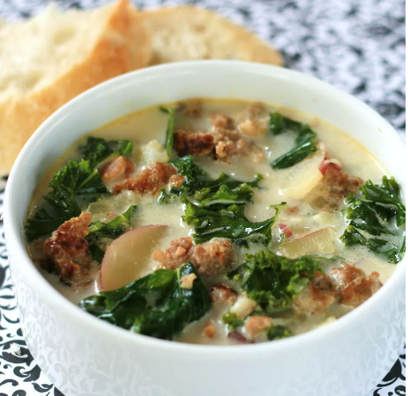

Super-Delicious Zuppa Toscana

ABOUT THIS RECIPE
Zuppa Toscana is oh-so-good! This recipe has just the right amount of spice to keep you coming back for more!
INGREDIENTS
- 1 pound bulk mild Italian sausage
- 1 1/4 teaspoons crushed red pepper flakes
- 4 slices bacon, cut into 1/2 inch pieces
- 1 large onion, diced
- 1 tablespoon minced garlic
- 5 (13.75 ounce) cans chicken broth
- 6 medium potatoes, thinly sliced
- 1 cup heavy cream
- ¼ bunch fresh spinach, tough stems removed
INSTRUCTIONS
- Cook Italian sausage and red pepper flakes in a Dutch oven over medium-high heat
until crumbly, browned, and no longer pink, 10 to 15 minutes. Drain and set aside.
- Cook bacon in the same Dutch oven over medium heat until crisp, about 10 minutes.
Drain, leaving a few tablespoons of drippings with the bacon in the bottom of the Dutch oven.
Stir in onions and garlic; cook until onions are soft and translucent, about 5 minutes.
- Stir in chicken broth and bring to a boil over high heat. Add potatoes and simmer until fork tender, about 20 minutes.
Reduce heat to medium; stir in cream, cooked sausage, and spinach. Cook and stir until spinach has wilted and sausage
is warmed through; serve.
- May the GAINS be with You!
NUTRIENTS
- Calories: 554 kcal
- Protein: 33 grams
- Fat: 46 grams
- Carbs: 20 grams
BACK TO HOME PAGE